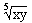
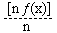
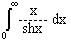
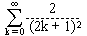
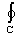
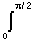
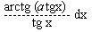

Analiza 2
jun '95, smer R
1. a) Ispitati diferencijabilnost funkcije ƒ(x,y) = na R².
b) Naci najkrace rastojanje tacke (0, 3, 3)od kruga k = { (x,y,z) Î R³ : x² + y² + z² = 1, x + y + z = 1}.
2. a) Neka je ƒ(x) proizvoljna funkcija na [a,b] i ƒn(x)
=.
Dokazati da je ƒn(x) ® ƒ(x)
na [a,b] kad n ® ¥.
b) Dokazati = .
3. Dati su telo F: 1 £ +
+  +
+  £ 4 (z ³ 0) i povrs G:
£ 4 (z ³ 0) i povrs G:
 =
=  +
+  (z ³
0).
(z ³
0).
1° Izracunati zapreminu onog dela tela F
koji se nalazi unutar povrsi G.
2° Izracunati krivolinijski integral I = (xy²
+ z²)dx + (yz + xz)dy + (zx² + yz²)dz, gde je C presecna
kriva povrsi G1: 2x²
+ y² = 2 i povrsi G2:
z = 3 - x² a orijentacija se vrsi u pozitivnom smeru gledano sa pozitivnog
dela ose Oz.
4. a) Naci integral I(a) =  za a ³ 0.
b) Naci integral I(a) =  ln
G(x) · sinpx
dx
ln
G(x) · sinpx
dx